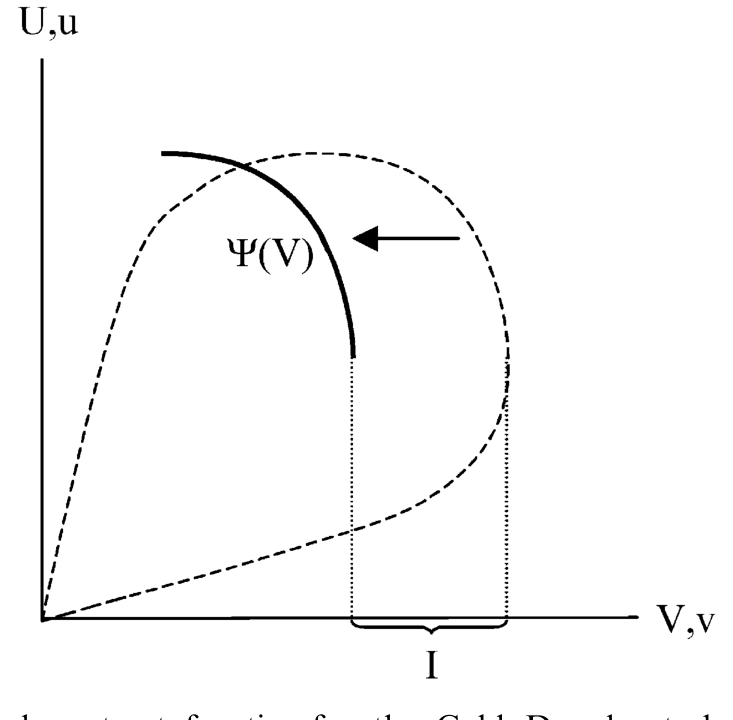
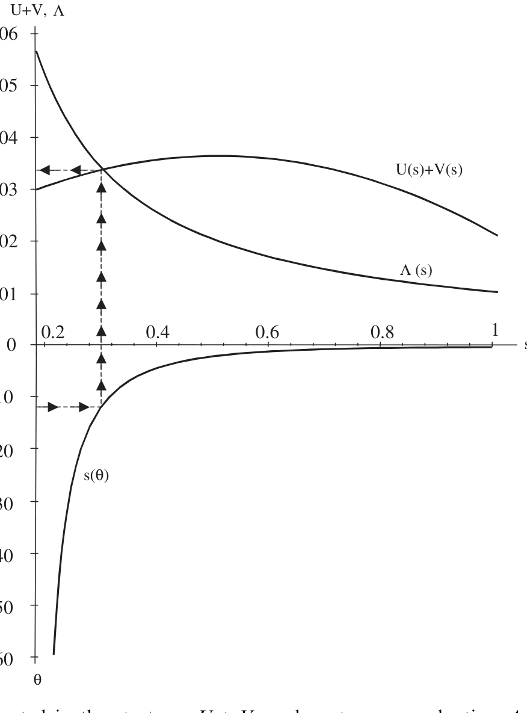
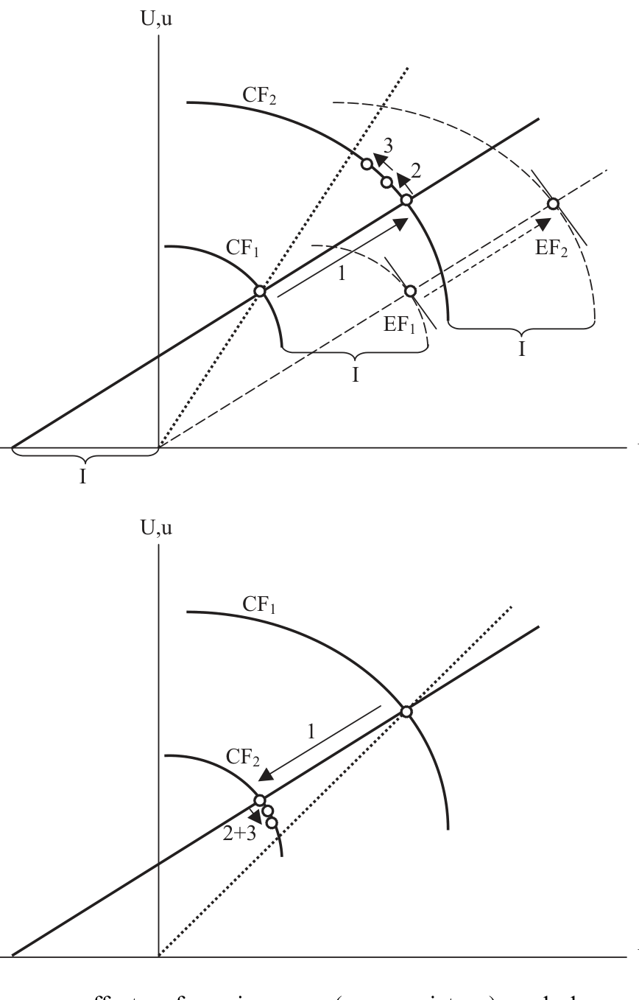
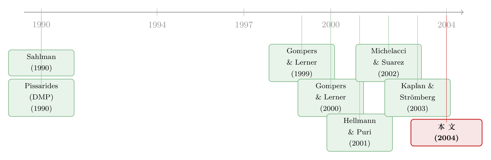

资本市场的冷暖，是怎样写进一家初创公司估值里的
本文读的是 Inderst & Müller (2004, JFE)：他们把「契约—讨价还价—搜寻」三件事拼进同一个均衡，说明风险资本的相对稀缺如何决定创业者与 VC 的议价能力，进而决定初创公司的定价、合约与价值创造。模型的一个反直觉结论是——给 VC 一点议价能力，反而能让股权分得更有效率；而互联网的繁荣与崩盘，不过是「VC 投资回报预期」一升一降在这台均衡机器里跑出来的短期与长期动态。
1 一个被传统模型偷偷绕开的问题
先抛一个事实。2000 年四季度到 2001 年四季度，短短一年，美国风险投资募集的总金额下跌了80% 以上。一个行业的「水位」一年掉掉八成，这不是微调，这是潮起潮落。
那么自然要问：资本供给这样剧烈的涨落，到底有没有改变初创公司被定价的方式、被写进合约的条款、以及最终在公司里被创造出来的价值？
按理说这是风险投资研究的核心问题。可有意思的是，传统的 VC 契约模型几乎答不上来。原因藏在它们一个不起眼的假设里：这些模型考虑的是「一个创业者 + 一个 VC」的孤立场景，并且默认资本市场是「竞争性的」——也就是创业者能把全部剩余 (surplus) 攫取干净。
可只要你把眼睛从黑板上抬起来看一眼现实，就会觉得不对劲。在一个有许多 VC、也有许多创业者的世界里，凭什么创业者就一定能拿走全部剩余？正如文中引用的一段话所说，泡沫顶峰时「太多的钱在追逐太少的项目」，创业者「想要什么估值都行」；泡沫一破，「创业者就现实多了」。议价能力明明在两边来回倒，取决于此刻谁更稀缺。
这篇论文要做的，就是把这个被绕开的环节正面写出来：不再假设创业者拥有全部议价能力，而是让议价能力由资本市场的供求内生地决定。
2 三块积木：契约、讨价还价、搜寻
作者把模型拆成三块积木，一块叠一块，最后拼成一个均衡。理解了这三块怎么咬合，整篇论文就通了。
第一块，契约 (financial contracting)。 一个身无分文的创业者有个项目，需要投资 I > 0，由一位 VC 出钱。项目成功（概率 p）时回报 X_h > I，失败时回报 X_l（基准模型里设 X_l = 0）。关键在于，成功概率 p = p(e,a) 同时取决于创业者的努力 e 和 VC 的努力 a，而这两份努力都不可签约 (non-contractible)。
这就构成了一个双边道德风险 (double-sided incentive problem)：VC 持股越多，VC 越卖力，但创业者越偷懒；反过来也一样。给定 VC 的持股 s，两人从股权中得到的效用分别是
$$u(s) \equiv p(1-s)X_h - c(e), \qquad v(s) \equiv p\,s\,X_h - g(a),$$
其中 c(e)、g(a) 是严格凸的努力成本。把 s 从 0 拉到 1，就描出一条效用可能性前沿；它递减的那一段，作者称为股权前沿 (equity frontier) u = φ(v)，代表所有帕累托最优的 u–v 组合。
效率要求平衡两边的激励，等价地说，平衡两边的持股。存在一个让总剩余 u(s)+v(s) 最大的有效率持股 s#；在那一点，前沿的斜率恰好是 −1（即 φ'(v#) = −1）。把投资 I 算进来后，双方的「成交效用 (deal utilities)」是
$$U(s) \equiv u(s), \qquad V(s) \equiv v(s) - I,$$
而所有帕累托最优的 U–V 组合构成契约前沿 (contract frontier) U = C(V)，它正是把股权前沿向左平移 I 得到的：C(V) ≡ φ(V+I)。

Figure 1: Equity frontier and contract frontier for the Cobb-Douglas technology. The dashed curve
如图 1 所示，虚线是效用可能性前沿，它递减的粗体段是股权前沿，再左移 I 就得到契约前沿 C(V)。整篇论文后面所有的「定价」「价值创造」，都是在这条凹前沿上选一个点而已。
第二块，讨价还价 (bargaining)。 既然 Pareto 有效，那么成交就是在契约前沿上选一个点 (V, U)。选哪个点？作者用广义纳什讨价还价解 (generalized Nash bargaining solution)：双方分别有外部选项 (outside options) U^o、V^o，谈崩了就各自回到外部选项。成交效用最大化纳什积
$$[V - V^o]^{\eta}\,[C(V) - U^o]^{1-\eta}, \qquad \eta \in (0,1),$$
记 β ≡ η/(1−η)。对 V 求一阶条件，就得到刻画讨价还价解的核心方程：
$$\beta = -C'(V^d)\,\frac{V^d - V^o}{C(V^d) - U^o}. \tag{1}$$
读懂它只需一句话：VC 的成交效用 V^d 随自己的外部选项 V^o 上升、随对手的外部选项 U^o 下降——创业者那边正好相反。作者特意强调，结论不依赖纳什解的具体形式，只要满足这条「自己外部选项越好越占便宜」的性质，任何议价方案都给出类似结果。
但真正关键的一步在于第三块：搜寻 (search)。 外部选项 U^o、V^o 从哪里来？前两块都把它当作给定。这第三块要把它们内生化——这正是全文的枢纽。
3 把外部选项交给市场：搜寻这一步
作者把讨价还价嵌进一个稳态搜寻市场。这套框架在搜寻文献里很有名，就是 Diamond–Mortensen–Pissarides 模型（Pissarides, 1990）。
市场上有测度为 M_e 的创业者和 M_v 的 VC。一个关键变量贯穿全文：
$$\theta \equiv \frac{M_v}{M_e},$$
作者称之为资本市场竞争程度 (degree of capital market competition)。θ 越大，VC 相对越多、资本相对越充裕、市场对创业者越有利。
匹配函数 x(M_e, M_v) 规模报酬不变，于是双方的「到达率」只依赖 θ：VC 遇到项目的（泊松）到达率 q_v(θ) 随 θ 递减，创业者遇到 VC 的到达率 q_e(θ) 随 θ 递增。直觉很顺——VC 越多，VC 越难抢到项目，创业者越容易找到金主。
现在来内生化外部选项。市场是稳态的，所以「回到市场重新找」的价值，等于「一开始进入市场」的价值。以创业者为例，在小区间 Δ 内成交的概率是 q_e(θ)Δ，否则继续搜寻，于是
$$U^o = q_e(\theta)\Delta\,e^{-r\Delta}U^d + \big(1 - q_e(\theta)\Delta\big)e^{-r\Delta}U^o.$$
令 Δ → 0 求解，得到一个干净的关系：
$$U^o = \frac{q_e(\theta)}{q_e(\theta) + r}\,U^d. \tag{2}$$
它说外部选项 U^o 就是成交效用 U^d 扣掉「等待的折现损耗」；匹配越快、贴现率 r 越小，两者越接近。重新整理就是更眼熟的资产价值方程 (asset value equation)：
$$rU^o = q_e(\theta)\big(U^d - U^o\big), \qquad rV^o = q_v(\theta)\big(V^d - V^o\big). \tag{3,4}$$
把 (3)(4) 代回讨价还价的一阶条件 (1)，外部选项被彻底消去，最终落到一个只含 θ 的均衡条件：
这条方程（论文式 5）就是整台机器的心脏：给定竞争程度 θ，它唯一地定出 VC 的成交效用 V^d，从而定出持股 s、双方效用、以及公司里被创造的总价值。 三块积木到此咬合成一个闭环——市场供求 θ → 议价能力 → 持股 s → 激励 → 价值创造。
4 核心结论：价值创造为什么是「驼峰形」的
有了式 (5)，主结果几乎是水到渠成。命题 1 说：对每个 θ 存在唯一均衡；VC 的持股 s、成交效用 V^d、总效用 V^o 都随 θ 递减，创业者那边全部反过来。
故事是这样跑起来的：θ 上升 → 创业者更容易融资、等待成本下降 → 创业者外部选项 U^o 升、VC 外部选项 V^o 降 → 讨价还价向创业者倾斜 → 创业者成交效用 U^d 升、VC 的降。而 U^d 一升又反馈回搜寻市场（成交更值钱 → 搜寻更值钱 → U^o 再升……），如此迭代直到新的稳态。换句话说，θ 上升对应着沿契约前沿从右向左移动，VC 持股 s 一路下降。
但真正精彩、也最反直觉的，是总价值 V^d + U^d 的走向：它先升后降，呈驼峰形。
为什么？因为持股 s 下降会削弱 VC 激励、增强创业者激励，净效果取决于当前 s 离有效率持股 s# 有多远：
- 若
s > s#（VC 持股过多，常见于 VC 稀缺、议价强的「冷市场」），降s让总价值上升； - 若
s = s#，总价值达到最大； - 若
s < s#（VC 持股过少，常见于资本泛滥、创业者强势的「热市场」），再降s反而毁灭价值。

Figure 2: Total value created in the start-up, UþV; and post-money valuation L as a function of the
如图 2 所示，公司里创造的总价值 U+V 随竞争程度 θ 先增后减，而投后估值 (post-money valuation) L 则一路单调上升。这就引出一个极重要的政策含义：竞争性资本市场（创业者拿走全部剩余）并不是效率最优的。给 VC 留一点议价能力，反而能把股权分配推向 s#，逼近有效率的剩余分享。让一方独占议价能力是有代价的——这正是作者明确反对传统假设的地方。
顺带把估值讲清楚。投后估值 L ≡ I/s，投前估值 (pre-money valuation) G ≡ L − I = I(1−s)/s。既然 s 随 θ 递减，命题 2 立刻得到：投前、投后估值都随资本市场竞争程度 θ 上升。这与 Gompers & Lerner (2000) 的经验发现一致——资本流入越多，新创企业的估值越高。
（关于「给 VC 多大的饼才合理」这个分配问题，本博客另有一篇可对照阅读：《VC 拿走的，从来不止「一半的饼」》。）
5 短期与长期：一台能跑出「互联网泡沫」的机器
到这里 θ 还是外生的。第 4 节作者放开它，引入自由进入 (free entry)：长期里 VC 会因市场条件而进入或退出，竞争程度 θ 变成内生。这一步让模型从「比较静态」升级成「动态故事」。
设想 VC 投资的回报预期上升——无论是真的上升，还是仅仅被以为上升。短期内 VC 数量固定，θ 不变，存量 VC 先享受更好的回报；但回报变高吸引新进入，θ 随之上升，于是长期里出现：估值上升、VC 持股下降、对 VC 的成交条款变差。回报预期下降则相反：退出、估值下跌、留下来的 VC 拿到更好的条款。

Figure 3: Short- and long-run effects of an increase (upper picture) and decrease (lower picture) in
如图 3 所示，回报上升（上图）与下降（下图）各自的短期与长期路径，正好勾出一幅风险投资行业的周期画像。作者把它对到互联网的繁荣与崩盘上：繁荣初期，赢家往往比输家更快浮现（差项目能靠烧钱硬撑到现金耗尽），于是早期的成功故事不能代表行业整体，公众和投资者高估了互联网的真实回报；随着越来越多公司倒掉，投资者才向下修正预期。在模型语言里，繁荣与崩盘就是「感知到的 VC 投资回报」一升一降所驱动的进入与退出。
（关于互联网泡沫年代「进入是太多还是太少」这个问题，本博客另有一篇专门的讨论：《互联网泡沫，错不在「进得太多」，而在「进得太少」？》。）
作者还顺手讨论了两个比较静态：透明度 (transparency) 提高会改善初创公司的价值创造；而进入成本 (entry costs) 下降——如果总资本供给本就偏高——反而可能毁灭价值（因为它把 θ 推过了那个驼峰顶）。在第 6 节的扩展里，作者还说明了 VC 的事前筛选 (screening) 激励：竞争弱的「冷市场」里 VC 更愿意筛选项目，竞争强的「热市场」里反而不愿意。这一条与「热市场里钱追项目、尽调放水」的直觉完全吻合。
6 文献脉络
这条研究是两股水流的交汇。
一股是风险投资的契约理论。早期的 Sahlman (1990) 描摹了 VC 组织的结构与治理；随后 Hellmann & Puri (2001) 用经验证据揭示 VC 如何推动初创公司「专业化」，Kaplan & Strömberg (2002, 2003) 则把真实的 VC 合约一条条拆开，发现股权激励确实提高了 VC 提供增值服务的概率。这些工作奠定了「双边激励 / 持股决定努力」的微观基础，但它们大多停在孤立的一对一场景，默认资本市场竞争性。
另一股是搜寻—匹配理论。Pissarides (1990) 的 DMP 框架本是用来理解失业的，它的精髓是用「到达率」把市场松紧翻译成议价能力。把它移植到金融市场，正是这篇论文的关键一招（同样的搜寻—讨价还价机制，后来在场外市场的定价里也被反复使用，可参见本博客《价格里那道折扣，量的是「找不到买家」的时间》）。

本文站在两股水流的交汇点上：它把 Sahlman/Hellmann–Puri/Kaplan–Strömberg 这一脉的双边契约，嵌进 Pissarides 这一脉的搜寻市场，让外部选项内生于资本供求。与之最近的同期工作是 Michelacci & Suarez (2002)——他们也有一个初创融资的搜寻模型，但不考虑激励合约、也不考虑持股失衡带来的低效，焦点在搜寻外部性上。Inderst–Müller 的独到之处，恰恰是把「持股是否有效率」这件事放进了搜寻均衡里。而经验上的对照证据，则来自 Gompers & Lerner (2000) 关于「资金流入抬高估值」的发现。
7 评论与延伸（Q&A + 研究方向）
(a) 几个可能的疑问
Q：「资本市场竞争程度 θ」和我们平常说的「市场竞争激烈」是一回事吗？
不完全是。
θ ≡ M_v/M_e是 VC 与创业者的存量之比，它度量的是资本相对项目的稀缺程度。θ高意味着 VC 多、资本充裕，竞争对创业者有利。它不是产业组织里的「企业数目」，而是搜寻市场里的「市场松紧」(market tightness)。
Q：为什么说「竞争性资本市场不是最优」？这听起来很反直觉。
因为本文的低效来自双边道德风险，最优要求持股落在
s#。完全竞争（创业者拿走全部剩余）会把 VC 持股压得过低s < s#，削弱了 VC 的增值激励。给 VC 一点议价能力，把s拉回s#附近，反而效率更高。这与「竞争总是好的」直觉冲突，根源是这里有一个激励的外部性，而非单纯的分蛋糕问题。
Q：把外部选项内生化，真的改变了结论，还是只是技术上更漂亮？
实质性地改变了。若像传统模型那样固定外部选项，你得不到「估值随
θ单调上升、价值创造随θ驼峰形」这些可检验含义，也无法把繁荣—崩盘内生成进入—退出动态。枢纽正是式 (5)：把 (3)(4) 代回 (1) 后，均衡只由θ决定，这才让比较静态有了抓手。
Q：模型把互联网泡沫归因于「感知回报」上升再下降，会不会太省事了？
这是一个诚实的简化。作者并没有解释「为何感知会错」，只是给出一个合理机制——赢家比输家浮现得快，早期样本有偏，于是公众高估真实回报。它的价值在于：一旦你接受感知回报的一升一降，模型就能内生地复制出估值、持股、条款的全套周期路径，而不需要额外假设。
Q：q_v(θ) 递减、q_e(θ) 递增这套到达率，结论对它的具体形式敏感吗？
不敏感。作者只用到匹配函数规模报酬不变（使到达率只依赖
θ）和单调性。讨价还价那一侧也只需要「自己外部选项越好越占便宜」这条性质，任何满足它的议价方案都给出类似结果。这让模型的定性结论相当稳健。
Q：模型对「失败回报 X_l」和「工资」是怎么处理的？
基准模型设
X_l = 0，分配完全由持股s刻画。第 5 节作者放开X_l > 0并允许 VC 向创业者支付工资w，此时契约前沿的构造更复杂（见论文图 5）。引入安全回报与工资主要影响合约形态，但不推翻持股—竞争—价值的核心逻辑。
(b) 几个可能的研究问题与提案
1. 把「感知回报」做成可观测的识别变量。 【经济故事】本文把繁荣—崩盘归于感知回报的升降，但「感知」在模型里是黑箱。若能用某种外生的乐观冲击（如某个明星退出事件、媒体关注度激增）作为感知回报的代理，就能直接检验「短期估值升、长期持股降、条款变差」这条路径。 【可行性】中。需要 VentureSource/PitchBook 的轮次估值与条款数据，外加一个可信的「感知冲击」工具变量；难点在于把「真实回报变化」与「纯感知变化」分开，识别要求很高。
2. 透明度提升的自然实验。 【经济故事】模型预测透明度上升改善初创公司价值创造。各国/各时期对 VC 估值与条款的披露规则不一，一次强制披露改革可作为冲击。 【可行性】中高。可用某国引入 VC 报告/披露要求的时点做双重差分 (difference-in-differences, DiD)，比较改革前后初创公司的估值离散度与后续业绩。数据需跨境拼接，但识别策略干净。
3. 把这套「供求决定议价能力」搬到信用/公司债的一级市场。
【经济故事】债券承销也是一个搜寻—议价过程：发行人多、承销资本紧时，定价与条款向谁倾斜？本文的 θ 在这里就是「可投资资本 vs. 待发行项目」之比。
【可行性】高。一级市场发行数据（如 Mergent FISD）丰富，可用资本市场松紧（基金流入、利差水平）作为 θ 的代理，检验发行折价与契约条款的周期性。这一方向与流动性、外资持有人的研究天然衔接。
4. 事前筛选随市场冷热反转的检验。
【经济故事】模型预测「冷市场多筛选、热市场少筛选」。这是一条清晰的反直觉含义，可用尽调强度、投资失败率、轮次间隔等代理来检验。
【可行性】中。需要项目层面的尽调或失败数据（较难获取），但若能拿到，识别只需对比不同 θ 水平下的筛选强度，设计相对直接。
8 我的判断
这篇论文的贡献，在于它用一个变量 θ 把三件原本各说各话的事——契约、讨价还价、搜寻——串成了一台能自洽运转的均衡机器，并由此得到两个真正有分量的结论：其一，竞争性资本市场不是效率最优的，议价能力的分配本身有福利含义；其二，行业的繁荣与崩盘可以被内生成「感知回报」驱动的进入—退出动态。在 2004 年，这是把搜寻—匹配框架引入公司金融的一次漂亮示范。
但要诚实地说，它的识别仍停留在理论层面。全文没有一行回归，所谓「与证据一致」主要是定性地对照 Gompers & Lerner (2000) 和一些行业评论。模型给出的可检验含义（估值随 θ 单调、价值创造驼峰形、筛选随冷热反转）至今缺少一个干净的、用真实 VC 微观数据做的结构估计或准实验检验。另一个我会追问的地方是「感知回报」的黑箱——把周期的全部动力都押在一个未被解释的预期偏误上，理论上方便，经验上却难以证伪。
我接下来最想看到的，是有人拿 PitchBook/VentureSource 这一代轮次—条款数据，把 θ（资本市场松紧）构造出来，去检验「持股 s 是否真的随 θ 递减、估值是否随 θ 递增、而价值创造是否真有那个驼峰顶」。如果驼峰顶能被定位，那么「最优议价能力」就不再是黑板上的一个 s#，而是一个可以指给政策制定者看的、真实存在的位置。
参考文献
- Gompers, P., Lerner, J. (1999). The Venture Capital Cycle. MIT Press, Cambridge, MA.
- Gompers, P., Lerner, J. (2000). Money chasing deals? The impact of fund inflows on private equity valuation. Journal of Financial Economics 55, 281–325.
- Hellmann, T.F., Puri, M. (2001). Venture capital and the professionalization of start-up firms: empirical evidence. Journal of Finance 57, 169–197.
- Inderst, R., Müller, H.M. (2004). The effect of capital market characteristics on the value of start-up firms. Journal of Financial Economics 72(2), 319–356.
- Kaplan, S.N., Strömberg, P. (2003). Financial contracting theory meets the real world: an empirical analysis of venture capital contracts. Review of Economic Studies 70, 281–315.
- Michelacci, C., Suarez, J. (2002). Business creation and the stock market. Review of Economic Studies, forthcoming.
- Pissarides, C.A. (1990). Equilibrium Unemployment Theory. Basil Blackwell, Cambridge, MA.
- Sahlman, W.A. (1990). The structure and governance of venture-capital organizations. Journal of Financial Economics 27, 473–521.